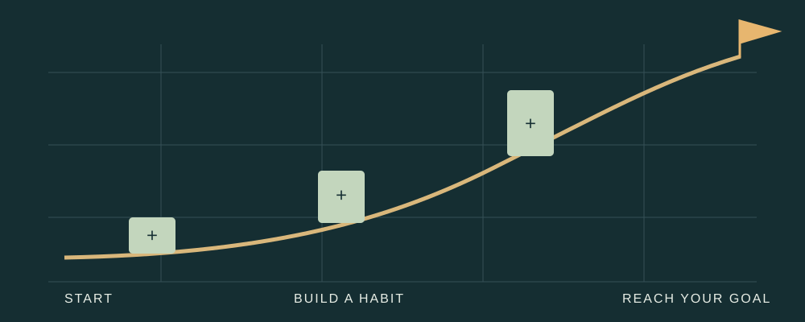

MONEY, TIME & POSSIBILITY
Give your next
goal a starting point.
Small, regular deposits can add up. This notebook explores how a savings habit, time, and compound growth work together.
Start with the basics ↓
01 / MAKE A PLAN
Turn “someday” into something specific.
A goal is easier to examine when it has an amount and a time horizon. Start with those two numbers, then explore the monthly contribution that connects them.
Interest adds growth to a balance. With compounding, previously earned interest can earn interest too. Contributions and time still matter: a higher assumed rate is not a substitute for a workable saving habit.
A simple planning checklist
- Define a goal.
- Choose a target amount.
- Choose a time horizon.
- Take stock of your starting balance.
- Try a monthly deposit you can sustain.
- Compare scenarios and revisit the plan.
02 / SEE IT GROW
What does “compound” mean?
Watch Khan Academy’s introduction, then use the simulator to compare deposits with growth. Change one input at a time to see what drives the result.
Video by Khan Academy ↗. For another learning tool, explore the SEC’s compound-interest calculator ↗.
03 / EXPLORE THE DATA
See a financial story in the numbers.
This live Tableau dashboard by Ronald Muguna explores personal finances. Use its controls and hover over marks to inspect the data. It is a separate author’s visualization, not a record of my finances.
Start with the whole dashboard, then enlarge it to read small labels and explore the details. In the enlarged view, use the left/right buttons or drag the position slider above the dashboard.
Source: Ronald Muguna · Personal Finance Dashboard on Tableau Public ↗. Open the original for a larger view.
04 / TRY AN EXPERIMENT
What would an extra $50 change?
Use the savings-goal simulator to compare your base plan with an extra monthly deposit, find a contribution for a target date, and inspect a year-by-year breakdown.
Open the savings simulator →